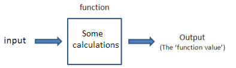
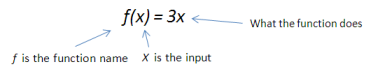
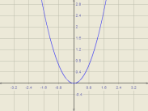

A function is a mathematical device that converts one value to another in a known way. We can think of it as a machine. You feed the machine an input, it does some calculations on it, and then gives you back another value - the result of the calculations.

The first step is to create a function. We give it a name and describe how it works inside. We write a function like this:

* The input to a function is often called its 'argument', or 'parameter'.
We can now use this function in any expression. For example This would use the function with an input of 3. Since this function multiplies its input by three, the variable j is given the value 9.
Below is a table showing the output of f(x) for a few sample values in its domain (input). Because the definition of f(x) says so, every output is three times the input.
| Input | Function value (output) |
| 3 | 9 |
| 12 | 36 |
| -2.2 | -6.6 |
A function can be used multiple times. Using our example function again: In this equation, the function f is used twice. The first time with an input of 2, then again with an input of 5. The result is that k will be given the value of 21.
In fact, this is a primary value of functions: you can 'package' a calculation as a function and the use it many times later.
For some (but not all) functions, there can be another function - the 'inverse function' - that operates in reverse. That is, given the output, it tells us what the input would have been. For the example function above, the inverse function could be It outputs the input divided by three.
| This | is spoken as |
| "f of x is defined as 3x" | |
| "j equals f of 3" |

A graph of a function is a picture that shows how the input and output are related. See the example above for the function It shows how the output changes as you gradually change the input. For more on this see Graphs of a function.